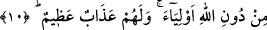
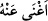
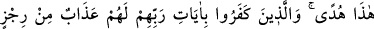
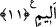

10. Ötelerinde de cehennem vardır. Kazandıkları şeyler de, Allah’ı bırakıp
edindikleri dostlar da onlara hiçbir fayda vermez. Büyük azap onlaradır.
“Ötelerinde de cehennem vardır.” Yâni kâfirler kendilerine hazırlanmış olan azâba
yönelik bulundukları için cehennem onların önlerindedir. Yahut onlar dünyaya yönelip
azaptan yüz çevirdikleri için cehennem onların arkalarındadır. Zira “verâ” kelimesi
“kişiyi önden yahut arkadan kuşatıp örten taraf”tır. Bazıları “verâ kelimesi aslında
masdar olup zarf yapılmıştır” demişlerdir. Verâ kelimesi, failine muzâf olunca bu sefer
verâ kelimesinden kişinin saklanıp örtündüğü cihet, murad edilir ki bu arkadır. Bazan
mefûle muzâf olur. Bu sefer verâ kelimesinden kişiyi örten taraf murad edilir ki bu ön
taraftır. Bundan dolayı verâ kelimesi zıd mânâlı kelimelerdendir.
Kâmûs’ta “verâ kelimesi, hem ön hem arka mânâsına gelir” denilmiştir. Zıt olsun
olmasın sonuçta mânâ aynıdır. O da “senden örtülü olan” demektir.
“Ne kazandıkları” mal ve evlatlar “ve ne de Allah’tan başka edindikleri velîler”,
putlar, “kendilerine bir yarar sağlayabilir. Onlar için büyük bir azâb vardır.”
“Şey’en” kelimesi, mefûlu bihtir. Ne mal ve ne evlad onlardan azabı def etmeye yetmez.
Bir şey ona kafi gelince, “__WORD__ denilir. Yâni tapmış oldukları putlar da onlara azaptan
bir şeyi def edemez. Putların azaptan bir şeyi bertaraf edemeyecekleri, mal ve evlâdın
fayda veremeyeceğinden daha zâhir ve belirgin olduğu halde mâtufla mâtûfun aleyh
arasına nefiy harfi olan “lâ”yı getirmek, kâfir ve müşriklerin bozuk inançlarına göredir.
Çünkü onlar ille de putların kendilerine şefâat edeceklerini ummakta idiler. Burada
onlarla alay edilmektedir. Onların ön yahut arkalarında olan cehennemde “onlar için
büyük bir azâb vardır.” O azabın künhü ve mâhiyeti bilinemez. Yâni bu şiddetin haddi
ve sınırı yoktur.
11. İşte bu Kur’an, bir hidâyettir. Rablerinin âyetlerini inkâr edenlere gelince,
onlara en kötüsünden, elem verici bir azap vardır.
“İşte bu Kur’ân bir hidâyettir.” Bu Kur’ân, hidâyetin zirvesindedir. Öyle ki sanki
Kur’ân bizzat hidâyetin kendisidir. “Zeyd adâlettir” sözü gibi ki “son derece âdildir”
demek olur.
“Rablerinin âyetlerini”, Kur’ân âyetlerini “inkâr edenler için çok elem verici bir
azâb vardır!”.
“Elem verici”, bu kelime, azab lafzının sıfatı olarak merfûdur. Kendilerine elem